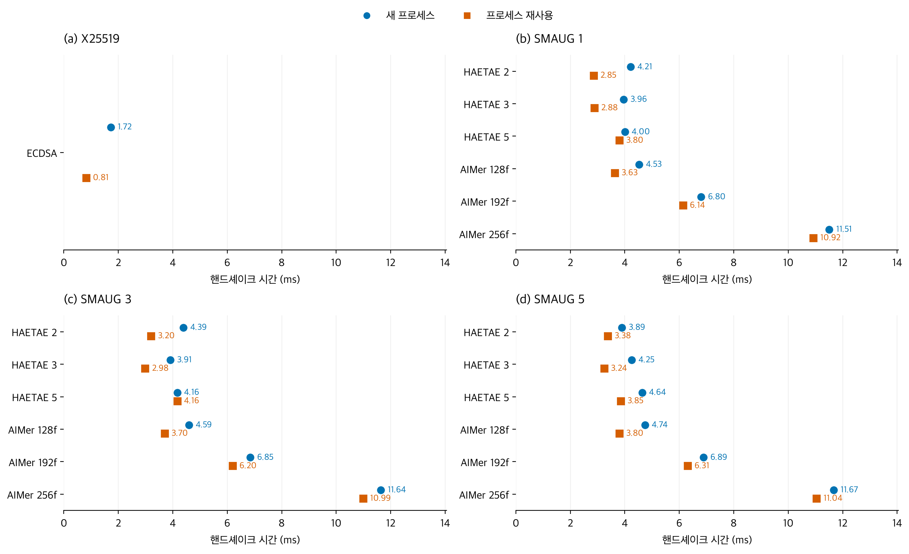
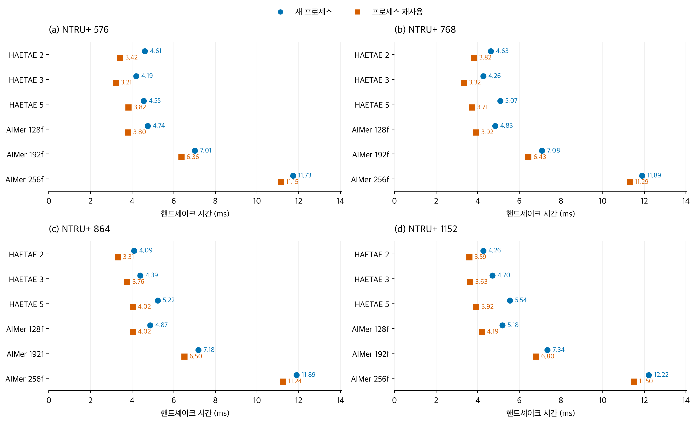

프로세스는 실행 중인 시험 프로그램입니다. 매 연결마다 새로 준비하는 조건과 실행 상태를 유지하는 조건을 비교합니다. 두 조건 모두 전체 핸드셰이크를 수행합니다. 조건과 측정 순서 설명
43개 구성 · 10개 짝지은 블록 · 구성·모드별 30회 분석
총 3,600회 수집 / 2,580회 분석. 서버·클라이언트 EC2 모두 중지 확인.
| 조건 | 고전 기준선 | PQC 구성별 중앙값 범위 |
|---|---|---|
| 새 프로세스 | 1.724 ms | 3.891–12.218 ms |
| 프로세스 재사용 | 0.815 ms | 2.852–11.500 ms |


이전 실행과 합산하지 않았다. 단일 EC2 쌍의 한 실행이며, 일부 구성의 모드 차이는 매우 작다. 메모리는 이번에 측정하지 않았다. 상세 방법과 해석은 README.md / README.en.md를 참조한다.